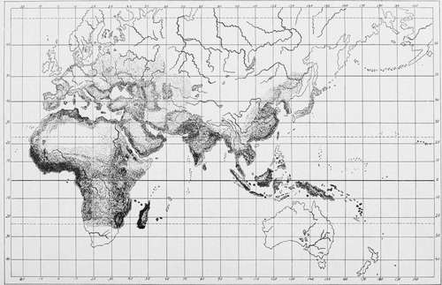
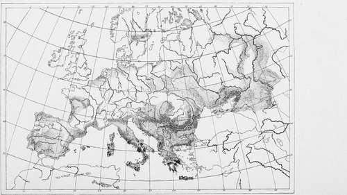

Geographic Distribution. Part 2
Description
This section is from the book "Malaria, Influenza And Dengue", by Julius Mennaberg and O. Leichtenstern. Also available from Amazon: Malaria, influenza and dengue.
Geographic Distribution. Part 2
Prominent centers occur in the Malay archipelago, in the Nico bar Islands, Sumatra (especially Singkel), Java (Batavia), Borneo, Celebes, and Amboina (in the Molucca Islands), while the Philippines suffer but little. More or less severe foci are scattered about Siam (especially in the valley of the Menam and Bangkok), Cochin China (along the course of the Mekong), and Tongking.
The coast and interior of China (Hong-Kong, Canton, Shanghai) and the coast of Korea and Manchuria are markedly infected, while Vladivostok is almost free.
Plate II.
Showing the distribution of malaria as indicated by the intensity of the shading.
In Japan the disease occurs for the most part only in a mild form.
Australia
The Australian continent, as well as most of the islands of Oceanica, is almost exempt from malaria . The only places infected are the coasts of New Guinea (Kaiser Wilhelm's land), Fin schhafen, the Solomon Islands, and the Bismarck archipelago. In New Caledonia, in spite of its numerous swamps, malaria is unknown. This is likewise true of Tasmania and New Zealand, the Fiji, Samoan, Sandwich, and Society islands.
America
Among the Antilles malaria prevails to a greater or less extent, with the exception of Barbados, St. Vincent, and Antigua;, while the Bahamas are relatively almost exempt. On the east coast of South America, Guiana is intensely infected.
Regions that suffer greatly and sometimes intensely are found in North Brazil, Paraguay, Bolivia, and Uruguay. Argentine Republic is almost immune.
Foci of endemicity are found on the west coast of Peru, Ecuador, and, since a comparatively recent time, Chile. In Central America and Mexico the Atlantic coast is badly contaminated, while the Pacific coast shows only scattered foci.
The eastern coast of North America, along the Gulf of Mexico, is markedly infected, and here and in the Southern States we find malarial hemoglobinuria (blackwater fever); we find malaria up the Mississippi far into the interior (Arkansas, Indian Territory, Missouri) ; it is found too in Texas and in a portion of New Mexico, as well as in Florida and Georgia. Of the Middle States, those lying along the east coast (South and North Carolina, Virginia, Maryland) especially show foci, while those lying more centrally and toward the northwest (Ohio, Indiana, Illinois, Missouri, Iowa, Minnesota, Wisconsin, Michigan) are less affected. Foci are also met with in southern Michigan, on the shores of Lake Ontario and Lake Erie, less frequently on the shore of Lake Huron, and almost not at all on Lakes Superior and Michigan.
Pennsylvania and New York show only a few mild centers, especially along the Hudson and Delaware rivers, and these are gradually disappearing with the advance of agriculture.
In Canada, except on the northern shore of Lake Ontario (Kingston), the disease can scarcely be called endemic.
In the Western States malaria is found in Wyoming, Utah, Colorado, Arizona, and California (along the Sacramento and San Joaquin).
Europe, Russia
A strongly infected region extends "from the steppes to the Caspian Sea, along the Volga, over the Caucasus lowlands and the northern shores of the Black Sea, over Taurida, Crimea, Kherson, Bessarabia, along the course of the Dnieper and Dniester to Ekaterinoslaf, over Ukraine and Volhynia, along the Danube, over the Moldau and Wallachia, through Bulgaria, Hungary, etc." (Hirsch).
Less severe foci are found in Tula, Samara, Kazan, and Novgorod.
The Caucasus is especially rich in malarial centers. These lie principally along the coast of the Black Sea, from Novorossinska to Tchorka, throughout the valleys to the north of the Caucasus, throughout Batum, on the coast of the Caspian Sea, in the lowlands of Koubak and Terek, and certain places in the governments of Elisabethpol and Erivan, in the Transcaspian district, and on the oasis Akal-Tekinski.
Austria-Hungary
In Galicia many places are infected. The principal foci are found in Cracow, Bosnia, Wadowice, Tarnow, and in the regions of the Dniester, Groclek, Lemberg, Sanok, and Tarn opol.
A row of foci is found along the Danube and its tributaries. These take their origin in the Marchfeld region, follow the small Hungarian lowlands (Schutt, Wieselburg, Komorn, Raab), then the great Hungarian lowlands between the Danube and Theiss (the counties Tolna, Baranya, Bacs-Bodrog, Torontal, Aracl, Temes, Csanad, Bekes, Szol nok), and wind up between the Save and Drave (in the province of Slavonia and Croatia) and on the right bank of the Save in Bosnia.
On the Adriatic portions of the Istrian and Dalmatian coast several islands are infected. Hotbeds are found in the Narenta valley (Met kovic) in Dalmatia, and in Pola in Istria, though this latter shows a decline since the improvement of the soil has been taken up. Bosnia and Herzegovina show along the Bosna and Narenta numerous foci.
According to Myrdacz, the yearly average of malaria cases in the Austro-Hungarian army from 1870 to 1882 amounted to 55,154, or 211.3 per cent, of the average force. In individual years considerable fluctuations were observed, as in 1870, 171.3 per cent.; 1872, 298.7 per cent.; 1882, 133.9 per cent.
"According to the territorial distribution of the military force the cases per 1000 were as follows: in Innsbruch, 25.9; in Prague, 29.9; in Briinn, 43.5; in Vienna, 63.5; in Gratz, 96.6; in Lemberg, 150.6; in Trieste, 166.4; in Sarajevo (1880-1882), 211.8; in Zara, 246.7; in Cracow, 247.7; in Budapest, 266.8; in Hermannstadt, 277.6; in Pressburg, 284.6; in Kaschau, 306.2; in Temesvar, 473.8; in Agram, 537.3."
Plate III.
Showing the distribution of malaria as indicated by the intensity of the shading.
In the decennium from 1873 to 1882 there were 72 deaths from acute malaria .
We may mention as especially severely infected the garrisons of Peterwardein-Neusatz, Otocac, Esseg, Hungarian Weisskirchen, Szolnok, Szegedin, Arad, Guns, Kecskemet, Grosswarclein.
Since 1882 malaria has shown a steady and striking decrease in the Austro-Hungarian army. The average morbidity of the years 1883-1887 amounted to only 59.1 per cent, (see Myrdacz). Still later we find:
Continue to:
Tags
mosquito, malaria, influenza, dengue, symptoms, outbreaks, diseases, hemoglobinuria, infections